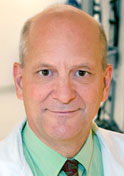
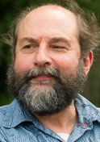
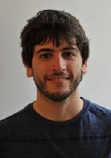
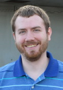

Updates
- December, 2011
The Institute of Physics' (IOP) website and community affiliate, www.medicalphysicsweb.org, recently published an article "Quantified biomarkers aid glioma resection" highlighting our recent presented in the Journal of Biomedical Optics. Link to article ...
- November, 2011
Pablo Valdes recently presented at the 2011 Annual Society for Neuro-Oncology (SNO) scientific meeting our work on using multiple quantitative optical biomarkers during glioma resection for improved surgical guidance, receiving an "Award for Excellence in Translational Research" from the Society. More...
- November, 2011
In this same month, our group just published a paper in the November issue of Journal of Biomedical Optics, which presents a technique that combines both fluorescence and reflectance for quantification of cancer biomarkers in both low and high grade gliomas, significantly improving the detection accuracy through quantification of well-established neoplastic processes. More...
- November, 2011
A recent study by our group presents a technique for depth-resolved fluorescence guidance, opening the door to the possibility of detecting deeper seated tumor, which appeared in the November issue of Physics in Medicine and Biology. More...
- October, 2011
Ziev Moses recently presented at the 2011 Congress of Neurological Surgeons (CNS) scientific meeting work quantifying microvessel density and gadolinium in fluorescence guided resection cases, receiving an "Top Poster Award in the Neurosurgical Forum-Tumors Section" from the Society. More...
- October, 2011
Our group recently published a paper titled: Genetics of glioblastoma: a window into its imaging and histopathologic variability, which appeared in the October issue of Radiographics, that presents a thorough review of key molecular and genetic mechanisms and associated imaging features in glioblastoma and of special relevance to the radiology community. More...
- August, 2011
Our most recent publication looking at quantitative measurements of PpIX across a range of low and high grade gliomas, finding a strong correlation between quantitative levels of PpIX and tissue anaplasticity, and thus further suggesting the need for improved, quantitative assessments of PpIX in fluroescence guided neurosurgery appeared in the August issue of Neuro-Oncology. More...
- May 1 , 2011
Our most recent publication appeared in the May issue of Neurosurgical Focus looking at ALA-induced PpIX fluorescence guided resection in skull base meningiomas . More...
- April 11, 2011
Dr. David W. Roberts presented at the 2011 AANS 79th Annual Scientific Meeting a talk titled "Intraoperative Fluorescence Labeling of Malignant Gliomas to Maximize Extent of Resection". More...
- March 25 , 2011
Our most recent work using a quantitative spectroscopic system and novel light transport modeling methods for significantly improved detection of intracranial tumors, recently appeared online in the Journal of Neurosurgey. More...
- February 14, 2011
Dr. Songbai Ji and Xiaoyao Fan presented at the 2011 SPIE Medical Imaging conference in Orlando, Florida, new algorithm developments of the brain deformation project. More...
- January 22, 2011
Pablo A. Valdes presented at the 2011 SPIE Photonics West conference in San Francisco, California, recent developments using a quantitative probe for improved detection of PpIX, titled "ALA induced PpIX Spectroscopy for Brain Tumor Image Guided Surgery ". More...
- September 11, 2010
Pablo A. Valdes presented at the 2011 World Molecular Imaging conference in Kyoto, Japan, recent work on the fluorescence-guided resection project. More...
|
People
The following list includes current members of the Brain Research Group @ Dartmouth
 David W. Roberts, MD David W. Roberts, MD
Professor of Surgery (Neurosurgery), Chief of the Section of Neurosurery, Dartmouth Medical School, Dartmouth-Hitchcock Medical Center
Keith D. Paulsen, PhD
Professor of Engineering and Radiology, Thayer School of Engineering, Dartmouth Medical School
 Brent T. Harris, MD-PhD Brent T. Harris, MD-PhD
Associate Professor of Pathology and Neurology, Director of Neuropathology, Georgetown University Medical Center
Alex Hartov, PhD
Profesor of Engineering, Director M.S./Ph.D. engineering program, Thayer School of Engineering
Songbai Ji, DSc
Assistant Professor of Engineering, Thayer School of Engineering
Xiaoyao Fan
Postdoctoral Researcher
Dennis Wirth
Postdoctoral Researcher
Jaime Bravo
Graduate Research Assistant
Jonathan Olson
Staff Engineer
|